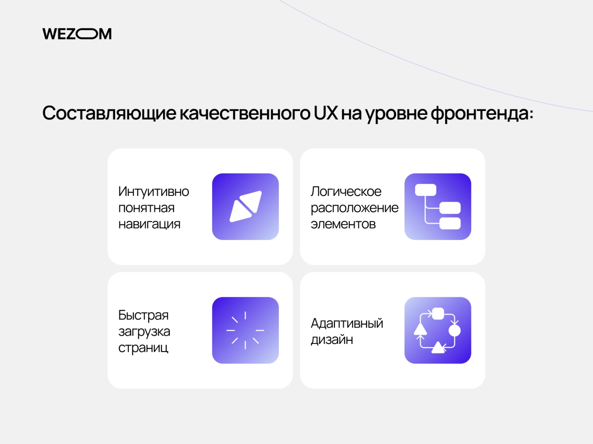

Вступ
Когда вы открываете сайт, пролистываете ленту новостей или добавляете товар в корзину, все кажется простым и естественным. На самом деле, за этой "легкостью" кроется большая работа разработчиков фронтенда. Речь идет не только о красивых кнопках и анимированных меню: фронтенд – это искусство делать взаимодействие человека с технологиями удобным, быстрым и приятным.
В этой статье мы разберем, что на самом деле скрывается за понятием frontend, рассмотрим основы фронтенд-разработки и ключевые технологии, помогающие создавать интерфейсы. Более того, вы поймете место и роль фронтенд-разработчиков в современных IT-проектах. Этот небольшой обзор будет особенно полезен для начинающих разработчиков, менеджеров и бизнесменов, интересующихся технической стороной сервисов.
Что такое фронтенд и почему он важен
Начнём с основ. Что такое фронтенд? Если отвечать простыми словами – это все, что пользователь видит на экране, когда открывает сайт или приложение. Это внешняя часть продукта, его интерфейс: кнопки, меню, анимации, оформление текстов, формы заказа и т.д. Если сравнить сайт с театральным спектаклем, то фронтенд – это сцена, декорации и актеры, взаимодействующие со зрителями. А то, что происходит “за кулисами” – работа серверов и баз данных – это уже бекенд.
Роль интерфейса во взаимодействии пользователя с сайтом
Итак, разработка фронтенда преследует цель создать пользовательский интерфейс продукта (User Interface, UI). Интерфейс является ключевым звеном во взаимодействии пользователя с веб-сайтом, выступая своеобразным посредником между сложным программным кодом и человеком. UI определяет удобство навигации, доступность контента и общее впечатление от использования ресурса. Продуманный и интуитивно понятный интерфейс обеспечивает эффективную коммуникацию между пользователем и функционалом сайта, способствуя достижению поставленных целей и формируя у потребителя положительный опыт.
Как фронтенд влияет на юзабилити и первое впечатление
От качества фронтенда во многом зависит пользовательский опыт (Use experience, UX) и юзабилити – то есть полезность и удобство продукта для конечного пользователя. При формировании опыта очень важно произвести первое впечатление – его определяют буквально несколько секунд взаимодействия с продуктом.
Интуитивно понятная навигация, логичное расположение элементов, быстрая загрузка страниц, адаптивный дизайн, корректно отображающийся на различных устройствах - все это неотъемлемые составляющие качественного UX и юзабилити, которые определяются на уровне front end. Когда пользователь сталкивается со сложностями в навигации, не может быстро найти нужную информацию или просто не испытывает удовольствия от дизайна, он с большой вероятностью покинет страницу. Именно поэтому frontend разработка критически важна для привлечения и удержания аудитории, повышения конверсии, формирования положительной репутации и успеха бизнеса как такового.
Что такое фронтенд разработка
Теперь, когда мы выяснили, что такое front end, можем разобрать и процесс его создания Если говорить простыми словами, фронтенд разработка – это создание видимой части сайта или приложения, с которыми взаимодействует пользователь. Цель этой разработки – превратить дизайнерские макеты и требования в функциональности в полноценный, интерактивный и визуально привлекательный пользовательский опыт.
С технической точки зрения front end разработка включает проектирование визуальной части, верстку, программирование интерактивных элементов, обеспечение корректного отображения интерфейса на различных устройствах и в различных браузерах, а также оптимизацию производительности для быстрой загрузки страниц.
Frontend vs Backend: в чем разница
Разделение разработки на фронтенд и бэкенд носит условный, но устойчивый характер. Фронтенд – это часть продукта, которую видит пользователь, а бэкенд – это то, что работает на сервере. Для наглядности давайте проведем небольшое сравнение: front end vs back end.